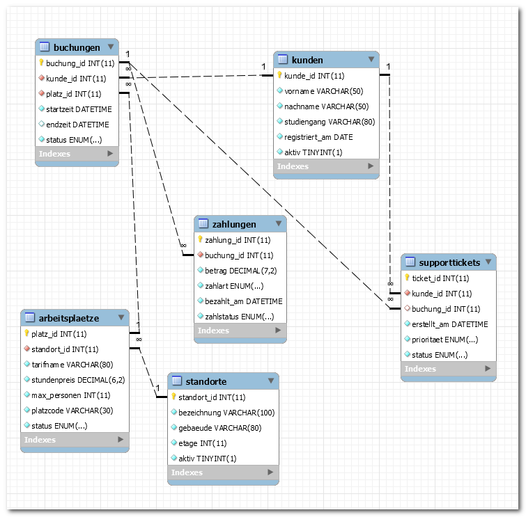

titel: "Klassenarbeit BG12 2025/2026: EERM und SQL (60 Min) – VERSION2" klasse: "BG12" schuljahr: "2025-2026" fach: "Informatik und Wirtschaftsinformatik" bearbeitungszeit: "60 Minuten" erreichbare_punkte: 34 verteilung: modellierung_normalisierung_anomalien: 14 abfragen_mehrtabellen: 14 theorie_mc: 3 struktogramm: 3 artefakte: modellierung_eerm_lehrkraft: "lernlabor_2025.mwb" sql_db_dump: "coworkingcampus_struktur_2025.sql" sql_db_daten: "coworkingcampus_daten_2025.sql" sql_db_eerm: "coworkingcampus_2025.mwb" sql_db_eerm_grafik: "coworkingcampus_2025.png" fassung: aufgaben
Klassenarbeit (60 Minuten) – VERSION2
Klasse/Kurs: BG12 | Schuljahr: 2025/2026 | Bearbeitungszeit: 60 Minuten | Erreichbare Punkte: 34
Struktur
| Teil | Inhalte | Punkte | Zeit |
|---|---|---|---|
| A | Theorie (MC) | 3 | 5 Min |
| B | EERM, Normalisierung, Anomalien | 14 | 25 Min |
| C | SQL-Abfragen über mehrere Tabellen | 14 | 25 Min |
| D | Grundlagen Programmierung (Struktogramm) | 3 | 5 Min |
| Gesamt | 34 | 60 Min |
Teil A (3 Punkte)
Aufgabe 1: Theorie (Multiple Choice) – 3 Punkte
Markieren Sie richtig/falsch. (0,5 Punkte je Aussage)
| Nr. | Aussage | r/f |
|---|---|---|
| 1 | Eine Entität kann mehrere Beziehungen besitzen. | |
| 2 | Eine Fremdschlüsselspalte darf nur NULL-Werte enthalten. | |
| 3 | GROUP BY bündelt Datensätze nach Attributwerten. |
|
| 4 | Die 3NF verhindert viele Redundanzen im Datenmodell. | |
5LEFT JOININ` zeigt immer nur Datensätze mit Partner an. |
||
HAVINGVING` filtert gruppierte Ergebnisse. |
Teil B (14 Punkte): EERM in MySQL Workbench
Wichtig: Teil B ist eine reine Modellierungsaufgabe. Es wird bewusst kein fertiges SQL-Schema vorgegeben.
Aufgabe 3.1: EERM modellieren – 8 Punkte
Sachverhalt Modellierung (Kontext 1):
Ein schulisches Lernlabor organisiert projektbasierte Workshops. Lernende buchen Workshops, Teams nutzen Geräte in Zeitslots, und Coachs begleiten mehrere Teams parallel. Die Schulleitung möchte später Auswertungen zu Auslastung, Teamaktivität und Coach-Einsätzen.
Auftrag: Leiten Sie aus dem Sachverhalt ein geeignetes EERM in MySQL Workbench ab. Begründen Sie Ihre Modellierungsentscheidungen kurz.
Aufgabe 3.2: Normalisierung bis 3NF – 4 Punkte
- Benennen Sie 2 funktionale Abhängigkeiten.
- Begründen Sie, warum das Modell in 3NF liegt.
Aufgabe 3.3: Anomalien – 2 Punkte
Nennen Sie je ein Beispiel: - Einfügeanomalie - Änderungsanomalie - Löschanomalie
Teil C (14 Punkte): SQL-Abfragen über mehrere Tabellen
Separater SQL-Kontext (3NF, Kontext 2) – anderen Kontext als Modellierung: Für Teil C wird absichtlich ein anderen Kontext verwendet als in Teil B (Kontext 1), damit die Modellierungslösung aus Teil B nicht indirekt vorgegeben wird.
Konkreter Sachverhalt: Ein Campus-Coworking-System verwaltet Kundinnen und Kunden, Standorte, Arbeitsplaetze, Buchungen, Zahlungen und Supporttickets (6 Entitätstypen).
Arbeitsgrundlage:
- SQL-coworkingcampus_struktur_2025.sql_2025.sql- SQL-Daten:coworkingcacoworkingcampus_daten_2025.sqlrenzgrafik: coworkingcampus_2025.png

Aufgabe 4.1 (4 Punkte)
Geben Sie für jede abgeschlossene Buchung den Kundennamen, Platzcode, Standort, Tarifnamen und Zahlbetrag aus. Sortierung: Nachname, Startzeit.
Aufgabe 4.2 (4 Punkte)
Ermitteln Sie je Kundin/Kunde die Anzahl abgeschlossener Buchungen. Zeigen Sie nur Personen mit mindestens 2 abgeschlossenen Buchungen.
Aufgabe 4.3 (3 Punkte)
Geben Sie pro Standort den letzten Buchungsstart und die Anzahl unterschiedlicher Kundinnen/Kunden aus, die dort gebucht haben.
Aufgabe 4.4 (3 Punkte)
Finden Sie Kundinnen/Kunden ohne Supportticket (LEFT JOIN).
Teil D (3 Punkte): Grundlagen Programmierung
Aufgabe: Struktogramm – CoworkingCampus Buchungsbetrag
Eine Bucherin möchte wissen, wie viel ihre Buchung im CoworkingCampus kostet. Erstellen Sie ein Struktogramm (gemäß Operatorenliste für Struktogramme) für folgende Verarbeitung:
- Eingabe: Anzahl gebuchter Stunden und Stundenpreis in Euro
- Verarbeitung: Berechnung des Gesamtbetrags
- Ausgabe: Gesamtbetrag in Euro
Hinweis: Verwenden Sie ausschließlich Sequenz-Blöcke (EVA-Prinzip). Kontrollstrukturen (Schleifen, Verzweigungen) werden nicht bewertet und sind nicht erforderlich.
| Bewertungskriterium | Punkte |
|---|---|
| Struktogramm-Rahmen (ANFANG/ENDE) und 3 Sequenzblöcke vollständig | 1,0 |
| Berechnungsformel korrekt (Zuweisung mit :=) | 1,5 |
| Variablennamen und Lesbarkeit | 0,5 |
| Gesamt | 3,0 |
Abgabe
- EERM-Modellierung Teil B (von Schülern erstellt): als
.mwb-Datei abgeben - SQL-Lösungen Teil C:
.mwbtei oder Text